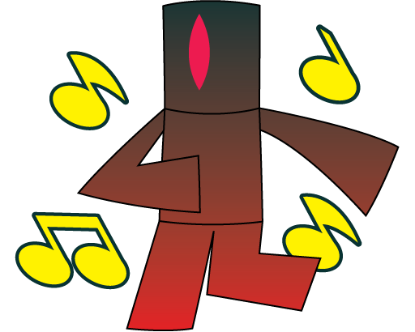

Signol

Signol is the Point of the second world, Cavern Club. Signol's symbol is red and resembles a gem. Upon meeting them, they will ask you to collect 3 stars to prove you're serious. After that, they ask you to beat their challenge course in order to collect their symbol. After completing Cavern Club they can be seen in the fourth room at Sky Emporium. Once you've gotten Signol's symbol and Compale's symbol, you have access to Wooden Workshop, Star Sanctuary, and Sandbrick Sandbox.
Appearance
Signol has a reddish-magenta convex lens, the same shape as Mino's, and their gradient is very dark gray (top) and red (bottom).
Personality
Signol is lively, although sometimes a bit sassy, calling Shallare a "pushover" and saying "Now I've seen everything" when Ixol freaks out.
However, they do not seem to have any dislike for the other Points; it appears as just friendly teasing.
Trivia
- Signol's name is a pun on the word "signal".
- Signol's pre-point name was Evon.
- Signol is SirRovers's favorite Point.
Back to home